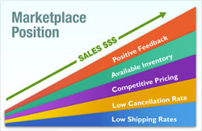

{kind=link}

Marketplace Optimization is a revolutionary new concept in the ever changing online marketplace. Emerging software and services are used to optimize a company's sales strategy in order to increase seller ranking on multiple marketplaces (Amazon, eBay, etc.).
A Marketplace Optimization Expert provides insight into the individual ranking algorithms (signals) used by marketplaces to recommend sellers to prospective buyers. By identifying and improving signal performance a company will receive preference, resulting in increased exposure (sales) on a marketplace by winning the "Buy Box".
 Marketplace Optimization (MpO) is the future to today's Search Engine Optimization (SEO). Marketplaces use one set of signals to rank sellers on their platforms and search engines use a different set of signals to rank websites in search engine results. Going forward search engines will be incorporating marketplace signals to rank websites in search engine results. This is because marketplaces use measurable performance metrics that give an accurate assessment of the customers overall shopping experience on the marketplace. In the future MpO may be more important to a company than SEO. In October 2011, Google announced its "Trusted Stores" program which will utilize high level marketplace signals from selected retailers that will be used to differentiate websites during the 2011 holiday shopping season.
Below is a sample of the signals a marketplace could use to rank sellers:
The Zoovy e-Commerce platform is the best Marketplace Optimization Solution available to businesses. Our award winning software delivers improvements in all 5 functional areas of marketplace optimization, along with trained professionals who can advise how to use it.
Learn more about Zoovy's Marketplace Optimization services
Learn more about Marketplace Optimization